Imágenes
Para empezar con el rigeo de luxo tenemos que tener ya nuestro modelo totalmente terminado
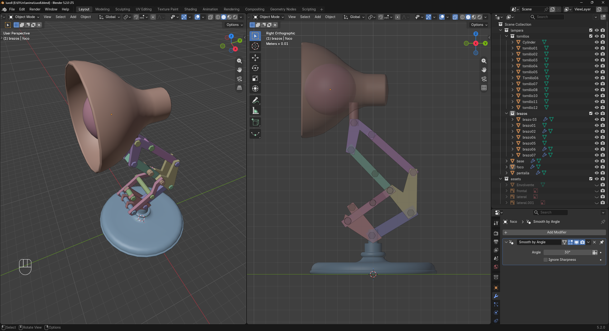
Modelado de la lámpara
Vamos agregara un primer hueso lo llamaramos "root"
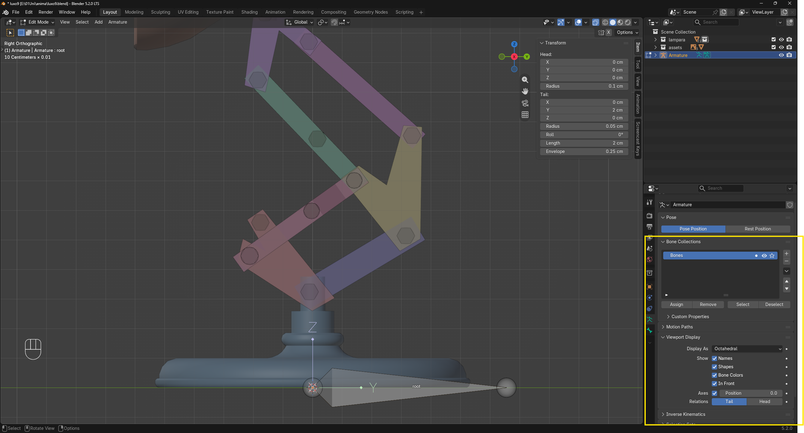
para trabajar más comodamente vamos a activar las opciones de Names, in front y axes
En Edit mode movemos este primer hueso como esta la imagen
con SHIFT +A agregamos otro hueso
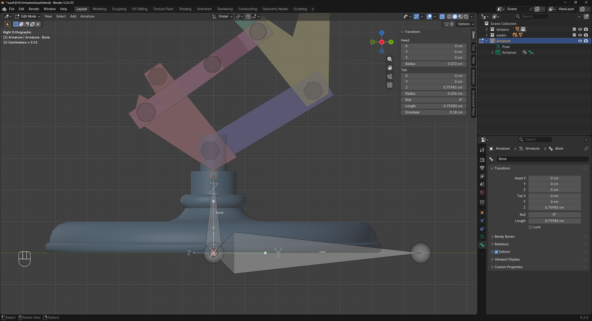
Se debe de ver de la siguiente manera
Ahora vamos a colocar este hueso al primer tornillo
Nos vamos a object mode, selecionamos el primer tornillo y usamos la combinacion de teclas SHIFT+ S cursor to selected
seleccionamos el bone y nos pasamos a Edit Mode, seleccionado la cabeza del hueso le damos ahora SHIFT+ S Selection to cursor
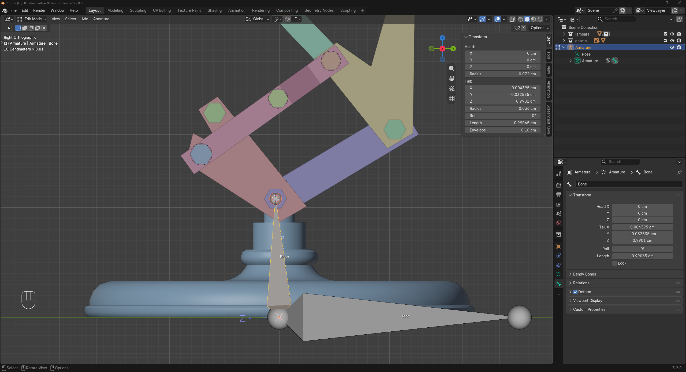
El resultado debe ser algo como esto
En edit mode extruimos el siguiente hueso
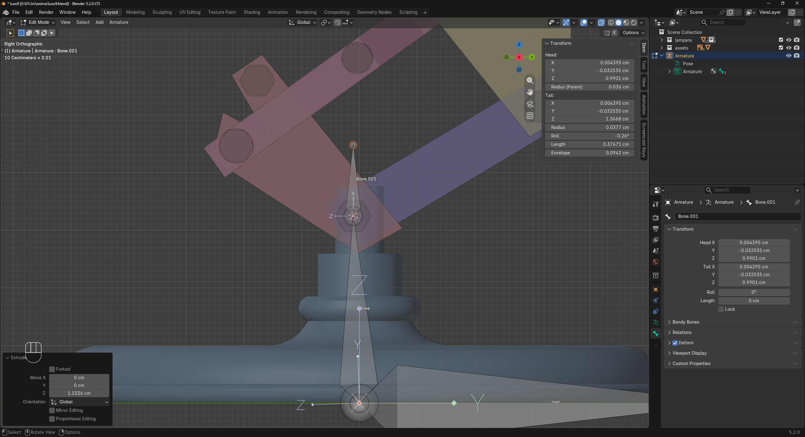
volvemos hacer lo del primer tornillo, object mode, seleccionamos el siguiente tornillo, SHIFT+S cursor to selected, seleccionamos el hueso,edit mode, seleccionamos la cabeza del hueso SHIFT +S Selection to cursor.
Nuestro resultado debe ser esto
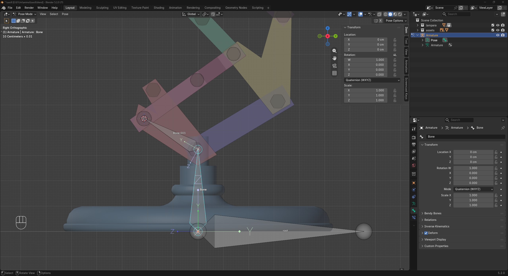
Continuamos los pasos hasta tenerlo así
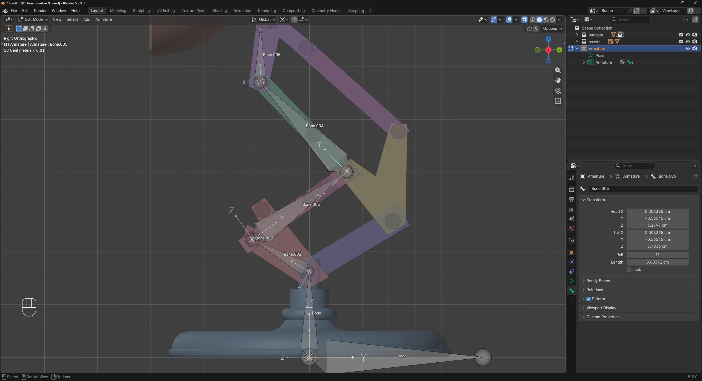
Continuamos los pasos hasta tenerlo así
vamos ahora hacer la otra parte de los huesos
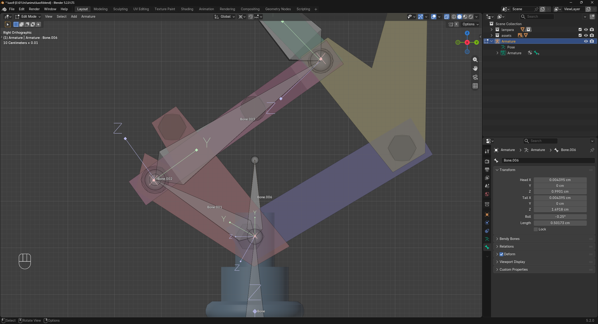
generamos el hueso 006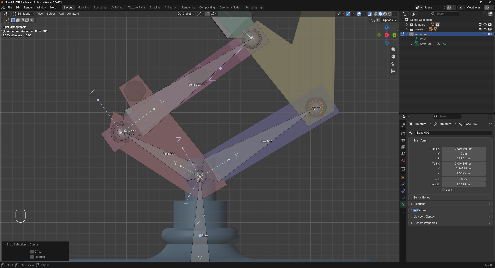
lo acomodamos respecto al tornillo
generanos el hueso 007
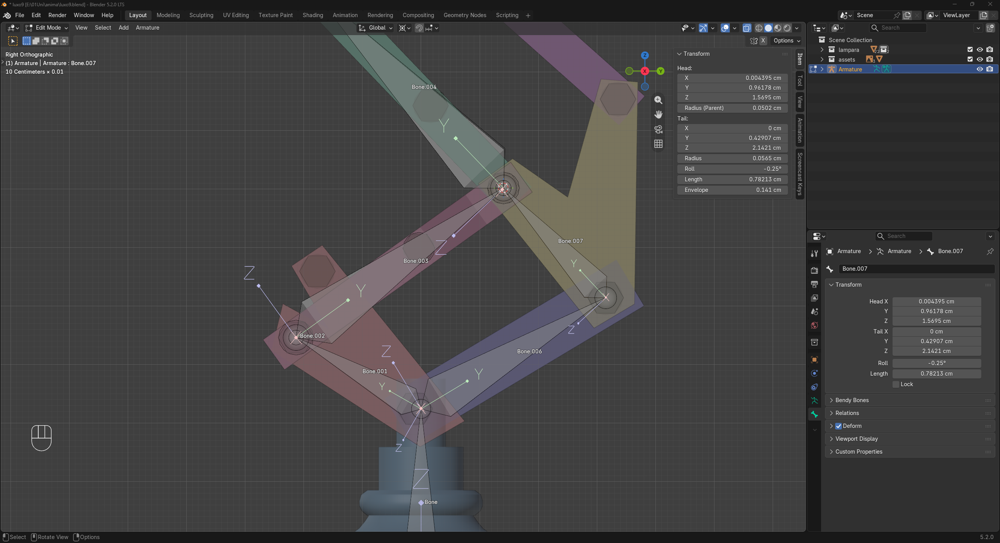
El resultado debe ser este.
Vamos a generar el hueso 008, seleccionamos el tornillo y colocamos el cursos ahí
Estando en edit mode nuestro Amature con SHIFT+A agregamos otro hueso
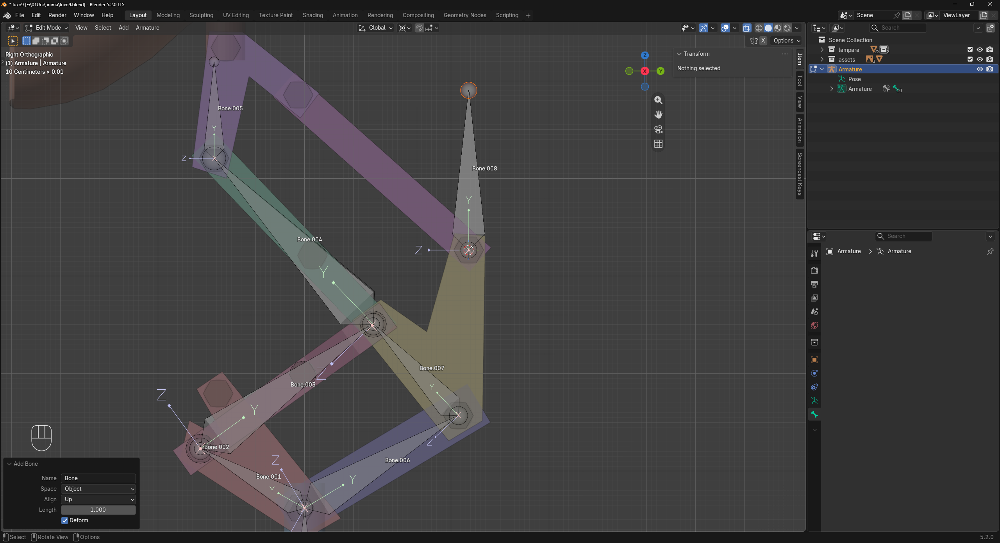
vamos por el hueso 09
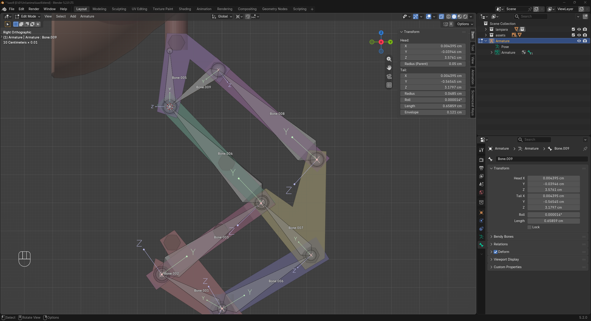